Nyitólap
Csapat
Galéria
Munkafolyamat
Kapcsolat
Téli vágású, homogén szerkezetű, minimális szerkezeti feszültséggel bíró válogatott rönk.
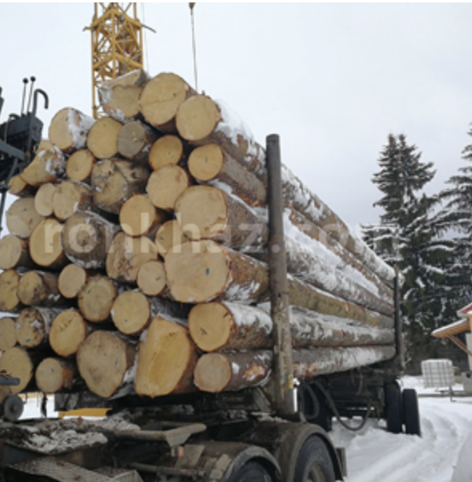
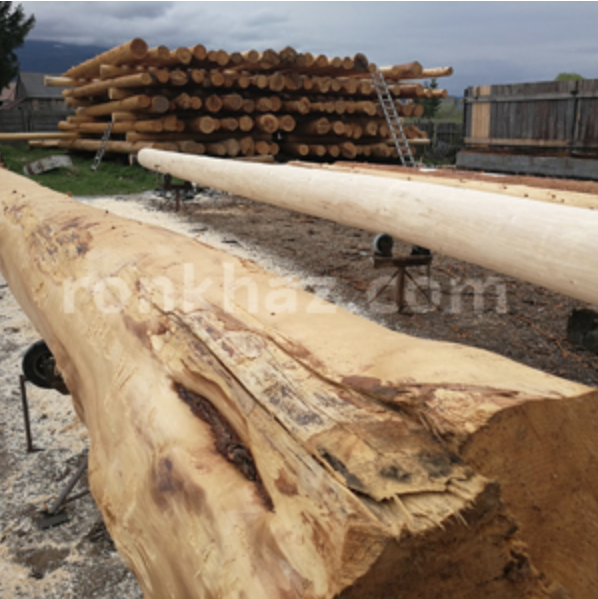
A kéreg nagynyomású vízzel történő eltávolítása után a rönköket "pihentetjük" majd felhasználás előtt átgyaluljuk.
A kezdő, a fogadó alappal találkozó rönkök lapoltak.
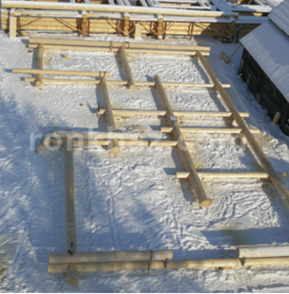
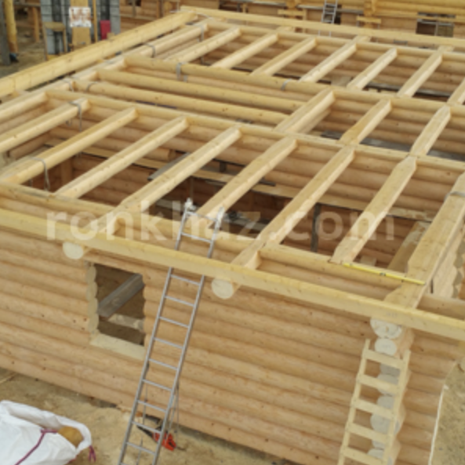
A földszint, lapolt rönk menynyezeti gerendákkal lezárva, talpszelemenek a rönkvégeken rögzítve.
Telephelyünkön, a gyártás első fázisaként minden ház rönkszerkezetét össze faragjuk a szerkezetkész állapot különböző fázisaira, felépítjük.
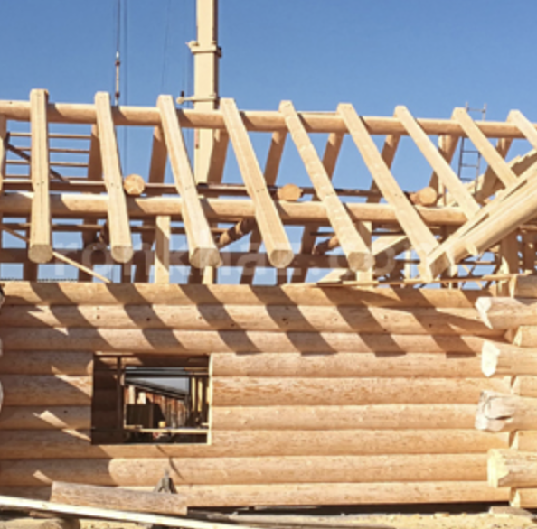
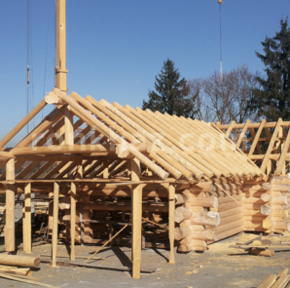
A szarufák kérés szerint készülhetnek a beltérből látszó lapolt rönkből.
A szerkezet szétszedésre kerül, ezt követi a rakodás, ahol minden egyes rönk rögzítve van és a rönksorokat foszni pallók különítik el.
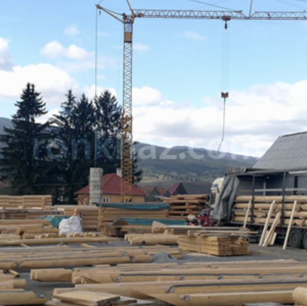
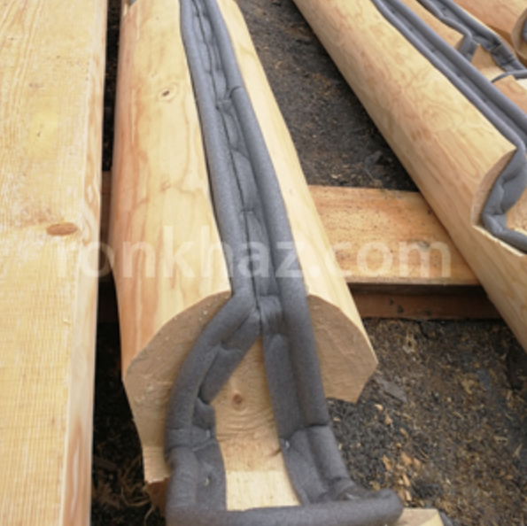
A szerkezeti elemek beazonosíthatóság végett számot kapnak, szétszedés után pedig szigetelőanyagot.
A szállítás nyerges vontatókkal történik, az összeszerelés mobil daruval.
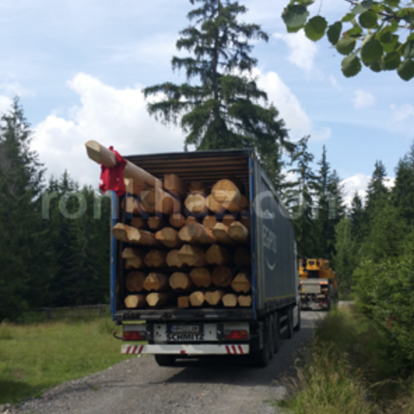
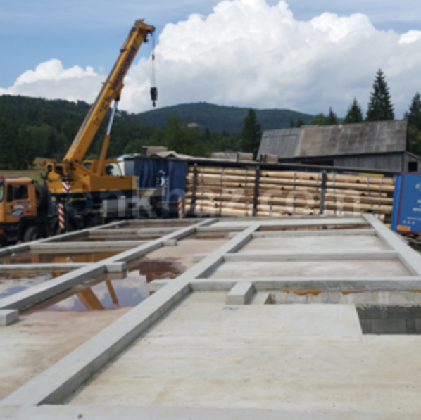
Az összeszerelés a tároló hely függvényében vagy direkt a kamionról vagy az alap körül elhelyezett rönkökből történik.
Helyszíni összeszerelás darabról, darabra.
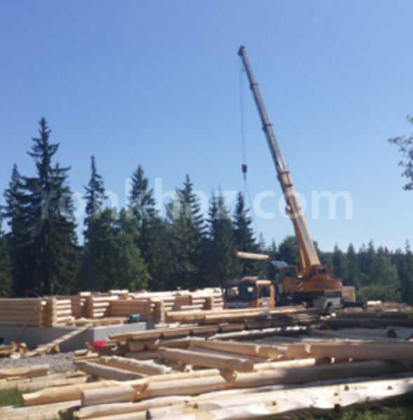
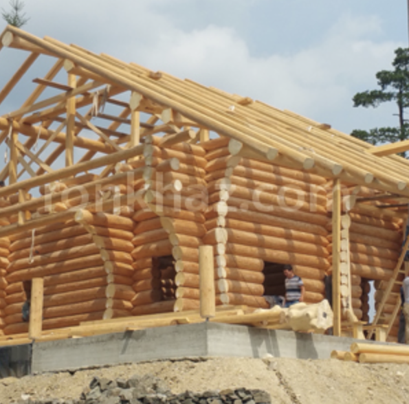
A telephelyi szerkezetkész állapot "rekonstruálása" 5-6 munkanap alatt. Fenyőgaly a csúcson, a gazda pálinkával kínál!
A rönkszerkezethez fel nem használt rönkökből deszka lesz s a tetőtér, közfalak burkolása ezzel az anyaggal történik.
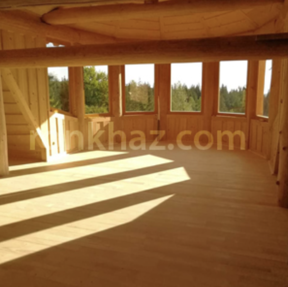
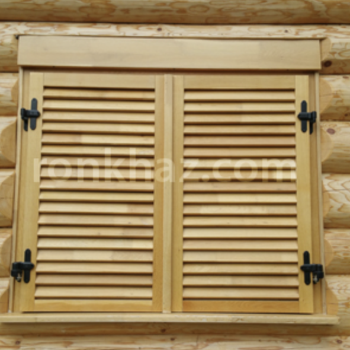
Ablakok, ajtók beszerelése a rönkfalakba.
Ablakok, ajtók beszerelése a rönkfalakba.
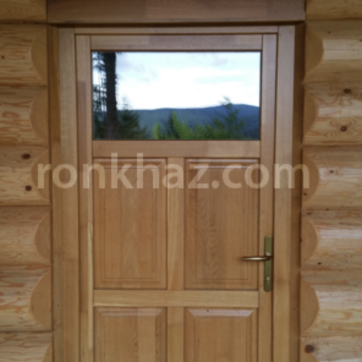
Kattints ránk!
Facebook · Régi oldal · Email
Terms of Use · Privacy Policy
© 2022 Ferenczi Rönkházak